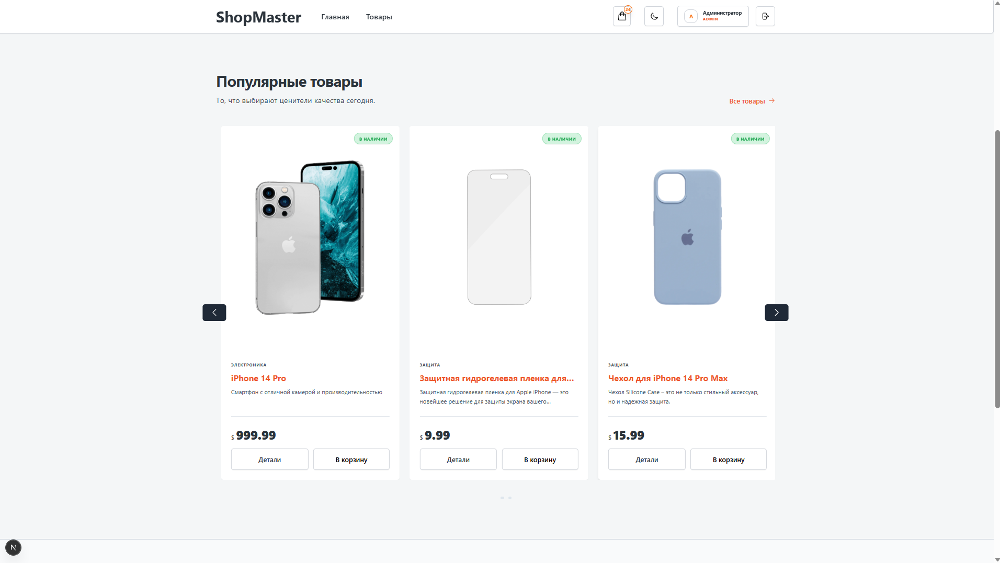
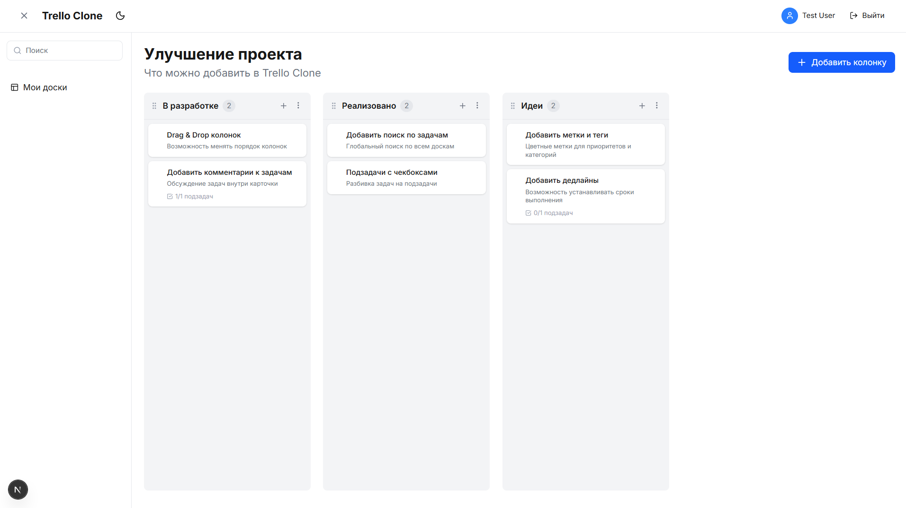

Янахметов Роман Юрьевич
Frontend-разработчик
yanakhmetov.roman@rambler.ru
+7 (953) 171-37-00
@yanakhmetov98
github.com/yanakhmetov
Санкт-Петербург, Россия
О себе
Frontend-разработчик с глубоким интересом к созданию высокопроизводительных и эстетичных веб-приложений. Специализируюсь на React-экосистеме. Имею опыт работы над сложными коммерческими проектами (e-commerce), где успешно интегрировал API и WebSocket, разрабатывал UI-компоненты и оптимизировал производительность. Постоянно изучаю новые технологии и стремлюсь к написанию чистого, поддерживаемого кода.
Навыки
React
Next.js
TypeScript
JavaScript (ES6+)
Tailwind CSS
CSS3 / SCSS
HTML5
Node.js
Express
Socket.io / WS
Prisma
PostgreSQL
MongoDB
REST API
Framer Motion
Vite
Git
Figma
Опыт работы
Aura52 | Frontend-разработчик
Июль 2024 — Настоящее время (включая стажировку)- Разработка и поддержка UI платформы онлайн-торговли на React.
- Создание масштабируемых UI-компонентов и доработка существующих экранов.
- Интеграция клиентской части с бэкендом через REST API и WebSocket для обновления данных в реальном времени.
- Оптимизация производительности приложения и исправление багов.
- Плотное взаимодействие с backend-разработчиками и дизайнерами в рамках Agile-процессов.
Проекты


Образование
СПбГЭТУ «ЛЭТИ»
Бакалавриат, Факультет радиотехники и телекоммуникаций
2016 — 2020Языки
Русский: Родной
Английский: B1 (Intermediate)